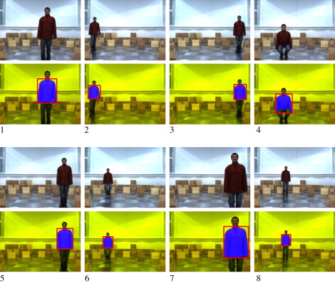

We Want To accomplish Follwing Tasks By the Aldebaran Nao:
First of all we have to detect an inividual
Secondly we then have to imitate the body actions performed by that individual
We will also implement Robot motion planning so that it does not hits any obstacle during imitation
 Robotics Education with NAO Reasearch Paper
Ashu Gupta 10161
Mohd. Dawood 10404